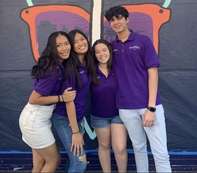
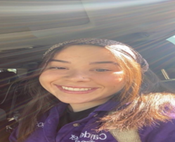
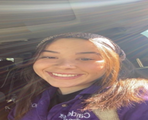

Cayden Stigler
I am a dedicated and passionate Environmental Science major with a strong desire to make a positive impact on our planet. Throughout my academic journey, I have developed a deep understanding of the intricate relationships between the environment, ecosystems, and human activities. My goal is to utilize my knowledge and skills to address pressing environmental issues and work towards sustainable solutions.
From an early age, I have been captivated by the natural world and its wonders. This fascination led me to pursue a Bachelor's degree in Environmental Science, where I have gained a comprehensive understanding of key scientific principles and their applications. I have delved into various subjects such as ecology, climate change, environmental policy, and resource management, acquiring a multidisciplinary perspective on environmental challenges.
To complement my classroom education, I actively engage in research projects and practical experiences. I have participated in fieldwork, collecting data on biodiversity and studying the impacts of pollution on aquatic ecosystems. Through these experiences, I have honed my data analysis and research skills while developing a deep appreciation for the complexities of environmental issues on a local and global scale.
Additionally, I have actively sought opportunities to contribute to environmental initiatives beyond the academic realm. I have volunteered with local conservation organizations, participating in cleanup campaigns and community outreach programs. These experiences have allowed me to witness the direct effects of environmental degradation and the importance of engaging and educating communities to foster sustainable practices.
Recognizing the importance of collaboration in addressing environmental challenges, I have actively sought opportunities to work with diverse teams. Through group projects and internships, I have honed my communication and teamwork skills, valuing the contributions of individuals from different backgrounds and areas of expertise. I am a firm believer in the power of collective action and interdisciplinary approaches to create innovative solutions to environmental problems.
As I move forward in my academic and professional journey, I aspire to specialize in environmental policy and advocacy. I am eager to explore the intersection between science and policy, bridging the gap between research and implementation. I am particularly interested in promoting sustainable practices in industries and influencing policymakers to enact effective environmental regulations.
Ultimately, my goal as an Environmental Science major is to be an agent of change, inspiring others to recognize the importance of environmental stewardship. I am committed to dedicating my career to creating a sustainable future through scientific research, community engagement, and policy advocacy. By applying my knowledge and skills, I am confident that I can contribute meaningfully to the preservation and restoration of our planet's ecosystems.
In summary, I am an enthusiastic and dedicated Environmental Science major with a strong academic foundation, practical experience, and a passion for addressing environmental challenges. I am determined to make a positive impact and contribute to the creation of a more sustainable world.
Experience
Club Member
• Worked towards conserving and protecting local wildlife habitats, organizing wildlife awareness campaigns, and conducting research projects to better understand and preserve the biodiversity of the area.
• Hostes many environmental clean ups
Assistant Manager
• Supervising and directing a team of employees.
• Handling customer inquiries and resolving issues to maintain customer satisfaction.
• Responsible for accurately handling cash, credit card transactions, and operating the cash register.
• Provided friendly and efficient customer service, answering inquiries and resolving customer concerns.
• Collaborated with team members to ensure smooth and efficient operations during peak hours.
• Maintained a clean and organized checkout area.
• Assisted with inventory management, including restocking shelves and conducting price checks.
Teaching Assistant
• Ran sessions to help students study SAT and ACT material.
• Reviewed and graded student practice exams
• Created educational content to help promote student education
• Hosted multiple weekly sessions with over 50 students in attendance each class
Education
University of Califronia, Riverside
Portfolio



